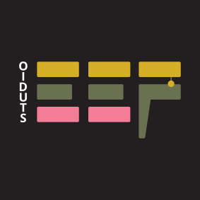
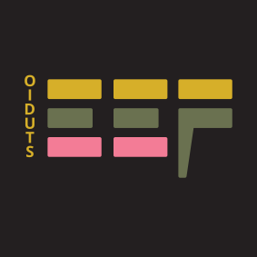
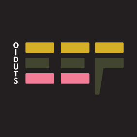

Ronde 2
Eef koos B — welke pimpmogelijkheid vind jij mooi?
Je keuze uit ronde 1 staat links als referentie. Daarnaast drie kleine pimpmogelijkheden: telkens hetzelfde teken, met één extra detail. Kijk rustig — ook hier is geen goed of fout.
Jouw keuze (referentie)
ronde 1Groot
In de donkere balk
Als tabblad-icoontje
Wat is er anders? Niets — dit is de variant die je in ronde 1 koos, met de iets lichtere olijf.
Olijf #6A7150 op inkt #231F20: contrast 3,2:1.
Verfdruppel
Groot

In de donkere balk
Als tabblad-icoontje
Wat is er anders? Onder de mosterdband van de F hangt één kleine verfdruppel — een knipoog naar de druppel in de hero van de site.
Druppel in mosterd #D6AF29, dezelfde kleur als de band; 4,9% van de tegelhoogte.
Geschilderde rand
Groot
In de donkere balk
Als tabblad-icoontje
Wat is er anders? De rechterkant van alle kleurbanden heeft kleine asymmetrische randjes, alsof de verf er net mee op zit.
Randjes in dezelfde vulkleur per band, 2–4px diep; geen filters, blijft leesbaar op 16px.
STUDIO in mosterd
Groot

In de donkere balk
Als tabblad-icoontje
Wat is er anders? De verticale STUDIO-letters zijn mosterdgeel in plaats van wit, met iets meer ruimte tussen de letters.
Mosterd #D6AF29 op inkt #231F20: contrast 7,8:1 (tekst, ruim boven de eis van 4,5:1). Wit was 15,4:1.
Welke vind jij mooier — B, B2, B3 of B4?
Drie kleine toevoegingen op jouw eigen teken. Dit is wat een objectieve blik ziet — jouw smaak beslist.
Verfdruppel
Voors
- Kleine knipoog naar de site, voelt als één verhaal.
- Blijft subtiel: hijgt niet, roept niet.
Naders
- Kiest een favoriet onderdeel (mosterd) boven de rest.
- Op 16px is de druppel nog maar nauwelijks zichtbaar.
Geschilderde rand
Voors
- Benadrukt dat het verfbalken zijn — past bij het vak.
- Zachte onregelmatigheid maakt het teken levendiger.
Naders
- Maakt het geheel iets losser, minder strak.
- Op 16px vallen de randjes grotendeels weg.
STUDIO in mosterd
Voors
- Meer kleur in het teken; mosterd leest prima op donker.
- STUDIO en de balken worden één familie.
Naders
- De rustige witte basis verdwijnt deels.
- Minder contrast dan wit (7,8:1 om 15,4:1) — nog steeds ruim voldoende.
Ook "gewoon B laten" is een prima antwoord.
Eerdere ronde: A (origineel) versus B (licht opgeschoond) — Eef koos B
Het origineel
Groot

In de donkere balk
Wat is er anders? Niets — het logo precies zoals het ontworpen is.
Olijf #424631 op inkt #231F20: contrast 1,7:1 (decoratief).
Licht opgeschoond — gekozen
Groot
In de donkere balk
Wat is er anders? Alleen de olijfkleurige balken zijn iets lichter (#424631 → #6A7150).
Olijf #6A7150 op inkt #231F20: contrast 3,2:1.